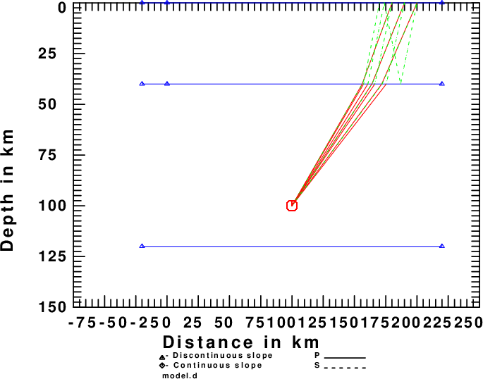
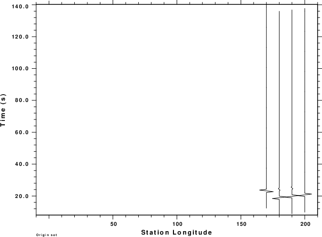
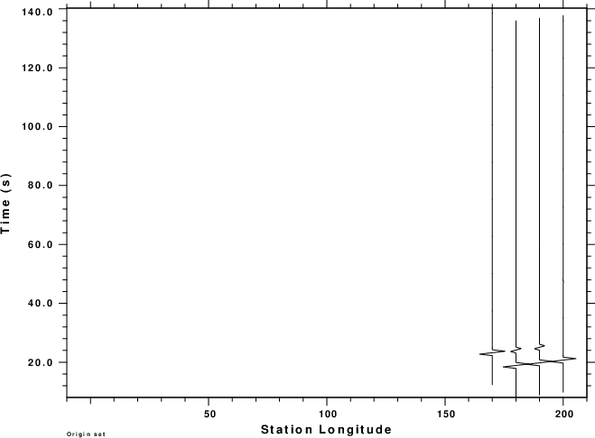

The purpose of this exercise is to illustrate ray parameter filtering by modifying one line of cseis96.dat. This can be done by using the ed editor within the DOIT script. The previous shell script are now rewritten as
cprep96 -M model.d -d dfile -HS 100 -XS 100 -HR 0 -DOALL -DOCONV ed cseis96.dat << EOF / 1.0000 3.1416 -0.0628 -3.1416 -3.1416 0.0628 3.1416 0.0010/s// 1.0000 -0.6400 -0.0628 -0.8760 -0.0000 0.0628 0.0000 0.0010/ w q EOF cseis96 -R > cseis96.out cpulse96 -V -p -l 4 -EXF -DELAY 10 | f96tosac -B cray96 -XMIN -50 -XMAX 250 -ZMIN 0 -ZMAX 150In changing the one line in cseis96.dat, one must be very careful to have the fields in exactly the same column.
Now consider the following plots
|
 |
1 21 0.19851E+02 0.11161E-01 0.13666E-01 0.31416E+01 0.00000E+00 -0.695931E+00 1 0.33000E+01 0.80000E+01 0.00000E+00 0.28000E+01 0.60000E+01
1 20 0.18920E+02 0.11418E-01 0.15042E-01 0.31416E+01 0.00000E+00 -0.753825E+00 1 0.33000E+01 0.80000E+01 0.00000E+00 0.28000E+01 0.60000E+01
1 19 0.18035E+02 0.11503E-01 0.16559E-01 0.31416E+01 0.00000E+00 -0.818587E+00 1 0.33000E+01 0.80000E+01 0.00000E+00 0.28000E+01 0.60000E+01
3 20 0.24213E+02 0.47507E-02 0.20070E-02 0.31416E+01 0.31416E+01 -0.671891E+00 1 0.33000E+01 0.80000E+01 0.00000E+00 0.28000E+01 0.35000E+01
3 19 0.23258E+02 0.48973E-02 0.19507E-02 0.31416E+01 0.31416E+01 -0.735672E+00 1 0.33000E+01 0.80000E+01 0.00000E+00 0.28000E+01 0.35000E+01
3 18 0.22361E+02 0.49476E-02 0.18254E-02 0.31416E+01 0.31416E+01 -0.808284E+00 1 0.33000E+01 0.80000E+01 0.00000E+00 0.28000E+01 0.35000E+01
4 21 0.33897E+02 0.19992E-01 0.74526E-02 -0.12079E+00 -0.12079E+00 -0.693969E+00 2 0.33000E+01 0.47001E+01 0.00000E+00 0.28000E+01 0.35000E+01
4 21 0.33897E+02 0.17993E-01 0.00000E+00 0.00000E+00 0.00000E+00 -0.693969E+00 3 0.33000E+01 0.47001E+01 0.00000E+00 0.28000E+01 0.35000E+01
4 20 0.32298E+02 0.16075E-01 0.90385E-02 -0.90041E-01 -0.90041E-01 -0.752353E+00 2 0.33000E+01 0.47001E+01 0.00000E+00 0.28000E+01 0.35000E+01
4 20 0.32298E+02 0.19224E-01 0.00000E+00 0.00000E+00 0.00000E+00 -0.752353E+00 3 0.33000E+01 0.47001E+01 0.00000E+00 0.28000E+01 0.35000E+01
4 19 0.30790E+02 0.15926E-01 0.95867E-02 -0.49196E-01 -0.49196E-01 -0.817116E+00 2 0.33000E+01 0.47001E+01 0.00000E+00 0.28000E+01 0.35000E+01
4 19 0.30790E+02 0.20475E-01 0.00000E+00 0.00000E+00 0.00000E+00 -0.817116E+00 3 0.33000E+01 0.47001E+01 0.00000E+00 0.28000E+01 0.35000E+01
19 21 0.46749E+02 0.17467E-03 0.66527E-04 0.62832E+01 0.62832E+01 -0.779337E+00 1 0.33000E+01 0.80000E+01 0.00000E+00 0.28000E+01 0.35000E+01
The record sections are
|
 |
 |
The synthetics are the same as those in Layer3 since the ray parameter filtering is the same. The advantage of the approach here is that the file sizes of cseis96.amp and cseis96.trc are smaller. In addition, since there is a search over fewer takeoff angles for rays, cseis96 will run much, much faster.